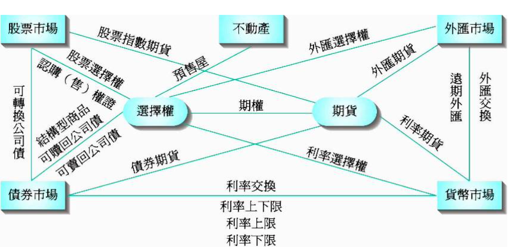
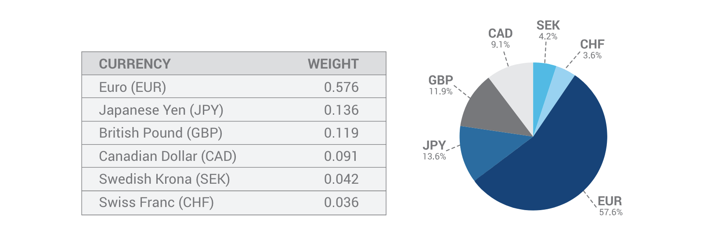
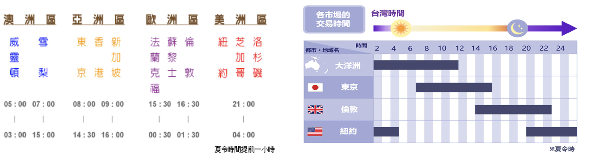
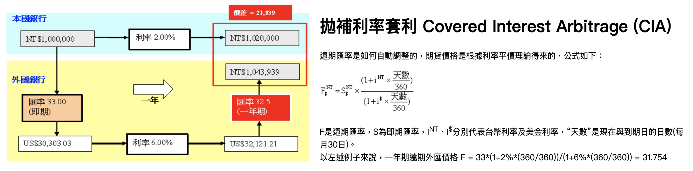
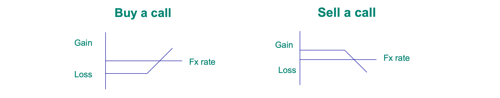
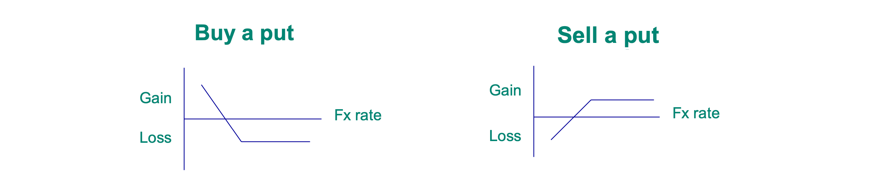
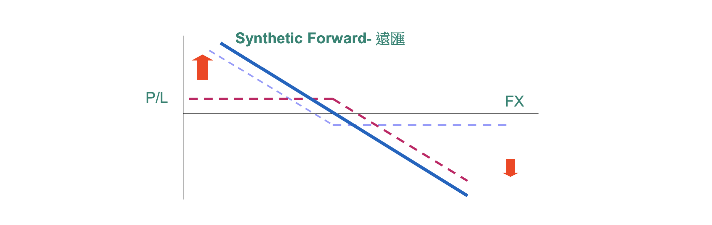

====================================
- 金融市場商品關係圖

- 在一個國家或地區內自由流通的貨幣，可以被用於日常的購買和交易活動,不受到政府的特殊限制。
- 主要包括現金、支票、儲蓄存款等形式的貨幣，體現了貨幣在經濟中的基本功能,能夠自由地在經濟主體間流轉。
- 指政府或中央銀行對特定貨幣的發行和流通進行嚴格管制的貨幣，受到政府的許可和限制，流通範圍有所局限。
- 例如：外匯管制下的外匯、某些特殊用途的數字貨幣等，政府通過管制貨幣達到特定的經濟政策目標，如控制資本流動、匯率等。
| 國家/區域 | 貨幣 | 符號Symbol | 代碼 | G10貨幣 |
|---|---|---|---|---|
| 美國 | 美元(Dollar) | $ | USD | ✓ |
| 歐元區 | 歐元(Euro) | € | EUR | ✓ |
| 日本 | 日圓(Japanese Yen) | ¥ | JPY | ✓ |
| 英國 | 英鎊(Pound, Sterling) | £ | GBP | ✓ |
| 加拿大 | 加幣(Canadian Dollar) | Can$ | CAD | ✓ |
| 瑞士 | 瑞郎(Swiss Franc) | SF | CHF | ✓ |
| 瑞典 | 瑞典克朗(Swedish Krona) | Skr | SEK | ✓ |
| 挪威 | 挪威克朗(Norwegian Krone) | Nkr | NOK | ✓ |
| 澳洲 | 澳幣(Aussie Dollar) | A$ | AUD | ✓ |
| 紐西蘭 | 紐幣(Kiwi Dollar) | NZ$ | NZD | ✓ |
| 墨西哥 | 墨西哥披索(Mexican peso) | Ps | MXN | |
| 俄羅斯 | 俄羅斯盧布(Russian Ruble) | ₽ | RUB | |
| 中國 | 人民幣(RMB,Renminbi) | ¥ | CNY、CNH | |
| 中國香港 | 香港幣(Hong Kong Dollar) | HK$ | HKD | |
| 韓國 | 韓圜(South Korean Won) | ₩ | KRW | |
| 台灣 | 新台幣(Taiwan Dollar) | NT$ | NTD | |
| 新加坡 | 新加坡幣(Singapore Dollar) | S$ | SGD | |
| 泰國 | 泰銖(Thai Baht) | ฿ | THB | |
| 越南 | 越盾(Vietnamese Dong) | ₫ | VND | |
| 馬來西亞 | 令吉(Malaysia Ringgit) | RM | MYR | |
| 印度 | 印度盧比 (Indian Rupee) | ₹ | INR | |
| 印尼 | 印尼盾 (Indonesian Rupiah) | Rp | IDR | |
| 菲律賓 | 菲律賓披索 (Philippine Peso) | ₱ | PHP | |
| 土耳其 | 土耳其里拉 (Turkish lira) | ₺ | TRY | |
| 南非 | 南非鍰 (South African Rand) | R | ZAR |
- 美元指數是根據6種貨幣相對於美元的加權平均值計算得出。
最初由美國聯邦儲備於1973年開發，用於提供美元對全球貨幣自由浮動時的外部雙邊貿易加權平均價值，
自1985年開始在ICE期貨美國上市以來，ICE期貨美國一直負責編制、維護、確定和加權美元指數的組成部分，並使其計算和發佈。
參考：
ICE U.S. Dollar Index® Contracts
✔️ 全球貨幣使用流通量統計，可參考：
國際清算銀行BIS

- G10貨幣在全球四大市場全天候輪流交替，隨時進場買賣外匯，無地域性限制、無漲跌停限制。

- 一單位外國貨幣折合若干單位的本國貨幣，e.g.,1美元折合新台幣27元，則美元兌新台幣的匯率為27。
- 一單位本國貨幣折合若干單位的外國貨幣，e.g.,1元新台幣折合1/27美元，則新台幣兌美元的匯率為1/27。
- 外匯市場報價慣例以美元立場主導進行報價，故大多數都採用間接匯率報價方式，e.g.,USD/TWD、USD/JPY、USD/CNH等，
- 惟四種貨幣採用直接匯率報價方式對美元進行報價，即EUR/USD、GBP/USD、AUD/USD、NZD/USD。
- 交易方式：外匯現鈔、現貨、期貨、保證金交易等 4 大項為主，其中以外匯保證金交易為最大宗，公司法人通常透過現貨及期貨買賣外匯。
- 交易以合約方式進行，相似期貨概念，但期貨合約使用「口」數，而外匯交易則使用「手 (lots)」，公司法人交易數量則直接使用「支(百萬)」。
- 買價是銀行向投資人買進外匯的價格(投資人要賣出時參考報價)；賣價是銀行賣出外匯給投資人的價格(投資人要買進時參考報價)。
- 買賣價點差愈大時，代表市場流動性不佳，將導致交易成本上升。
- 點(Pips)、點變動值(percentage in point)：外匯匯價的變化單位，也是外匯交易中最普遍的計價單位。
e.g.,EUR/USD報價由1.0831來到1.0832，則上升1點，多數外匯交易報價中，小數點第4位即為1點，為USD/JPY是小數點第2位為1點。
- 點值(Pip Value)：價格變化1點的合約價值變化，取決於合約規格與合約數量而定。
e.g.,1手標準合約=100,000個貨幣單位，每變動1點等於變動10個貨幣單位(0.0001*100000=10)。
- 滑價(Slippage)：下單到執行之間的價格差異，通常在劇烈波動期間出現，會增加交易成本，在停損限價單，會加大停損成本。
。
- 兩種不同貨幣間的價格關係，利用各自對美元的匯率套算得出。eg.,若1美元可分別兌換1.1085歐元、156.50日圓，則歐元兌日圓的交叉匯率為144.24。
| 報價幣別 | 買價bid | 賣價ask | 說明 |
|---|---|---|---|
| EUR/USD | 1.0800 | 1.0805 | - 要計算EUR/JPY的bid，€1先以EUR/USD bid價格換成$，再以USD/JPY bid價格將$換成¥，即為EUR/USD(bid)=1.0800乘以USD/JPY(bid)=155.50，得167.94。 |
| USD/JPY | 155.50 | 155.55 | - 要計算EUR/JPY的Ask，先以EUR/USD ask價格算出需要多少$換換成€1，再以USD/JPY ask算出要多少¥來購買這些$，即為EUR/USD(Ask)=1.0805乘以USD/JPY(Ask)=155.55，得168.07。 |
| EUR/JPY(交叉匯率) | 167.94 | 168.07 | 依出交叉匯率所得出的Spread高達13pips。 |
| USD/CNH | 7.2500 | 7.2510 | - 要計算CNH/TWD的bid，先以USD/CNH ask算出RMB¥1可換多少$，再以USD/TWD bid算出這些$可換成多少NT$，即為USD/TWD(Bid)=32.25除以USD/CNH(ASK)=7.2510，得4.4477。 |
| USD/TWD | 32.25 | 32.30 | - 要計算CNH/TWD的ask，先以USD/CNH bid算出購買RMB¥1需要多少$，再以USD/TWD ask算出需要多少NT$購買這些$可，即為USD/TWD(ask)=32.30除以USD/CNH(bid)=7.25，得4.4552。 |
| CNH/TWD(交叉匯率) | 4.4552 | 4.4477 | - 依交叉匯率所得出的Spread高達75pips。 |
- 現價掛單(Limit Order)：以高於當時市場價格，掛單賣出；或以低於當時市場價格，掛單買入。
- 停損掛單(Stop Loss Oreder)：以低於當時市場價格，掛單賣出；或以高於當時市場價格，掛單買入。
- C.O.C.掛單(One cancel the Other Order)：客戶可同時掛出限價掛單及停損掛單予銀行，並可指示其中一方成交，另外一方自動取消。
- I.D.T.掛單(If Done Then Order)：同時向銀行預先設定進場價位，於該價位成交後，立刻自動掛出限價及停損之反方向掛單，以停利或停損。
- Ｇ.T.C.掛單(Good Till Cancel Order)：掛單會一直有效，直到成交或取消該掛單為止。
- Ｇ.T.W.掛單(Good Till Ｗeekend Order)：最長以一週為限，通常以週五紐約IMM期貨市場收盤為截止時間(美國冬令/台灣凌晨4時，夏令時間/台灣凌晨3時)。
- N.Y.C.掛單(New York Close Order)：以當日紐約IMM期貨市場收盤為限(美國冬令/台灣凌晨4時，夏令時間/台灣凌晨3時)。
- 2日內(T+2)交割約定數量之買賣貨幣。
- 交割日慣例：若T+1日遇前面幣別國家假日不順延，遇後面幣別國家假日才順延，若T+2日只要遇其一幣別假日則都順延，確認交割日仍需洽銀行交易員確認。
- 交割風險額度(Settlement Risk Facility):向銀行申請在一定額度內，交割當日於銀行收到我方結售幣別金額前，請銀行先匯出結購幣別金額。
- 交割日>T+2交割約定數量之買賣貨幣。
- 遠期匯價 = 即期匯價+換匯點(兩貨幣間之利差)，並非對未來匯率預測，而是以即期匯率為基礎，透過貨幣市場運作反映二種幣別利率差距的匯率。
- 基於匯率均衡理論，由兩種不同貨幣之間的利率水準，用即期的匯價去推算未來兩國貨幣之間的遠期匯率理論價。
- 匯市的即期匯率與遠期匯率的差，或外匯期貨與即期匯價之間的差，其實就是兩種貨幣間的利率差(水差)。
- 利率較高的國家，遠期匯率必須比即期利率貶值，貶值的程度就稱為貼水，反之，為升水。
- 以下圖為例，若美元遠匯大於理論貼水，賣出美元遠匯有套利機會，使遠匯價格會趨近遠匯理論值。
- 當美國升息時，貼水幅度加大，現價與遠期點差擴大，意即現價上漲或遠匯價格下跌，或都上漲(現貨漲更多)。

| 經濟數據 | 公布時程 |
|---|---|
| 國際貨幣基金會 | 每年4、10月提出世界經濟展望，1、7月更新。 |
| 世界銀行 | 每年1、6月提出全球經濟展望。 |
| 經濟合作發展組織 | 每年6、11月提出經濟展望，每個月公布領先指標(CLI)。 |
| 經濟數據 | 內容 | 公布時程 |
|---|---|---|
| 非農就業人數變化 (NFP) | 衡量除了政府和農場工人外所有獲得薪酬的美國工人總人數。 | 每個月的第一個週五公佈。 |
| 消費者物價指數 (CPI) | 衡量一籃子商品的通脹。不包括食品和能源。 | 每個月15日美東時間8：30公佈。 |
| 生產者物價指數，已完成的商品 (PPI – Finished Goods) | 衡量生產者的通脹。不包括服務。 | 每個月15日左右公佈。 |
| 貿易賬或美國貿易赤字 (BOT) | 出口與進口的差異總值。 | 每個月10日美東時間8：30公佈。 |
| 密歇根大學消費者信心指數 (MCSI) | 衡量消費者對美國經濟的信心。這是基於每月對5000個美國家庭的調查。 | 初值在每個月15日公佈；終值於每個月的最後一個星期二公佈。 |
| 國內生產總值 (GDP) | 商品和服務的總產出值。包括季度和年度值。 | 每個月的季度數據在月底時公開。 |
| 經濟數據 | 發布單位 | 公布時程 |
|---|---|---|
| PMI | 國發會 | 每月1號 |
| CPI、WPI | 主計處 | 每月5號 |
| 外匯存底 | 中央銀行 | 每月5號 |
| 進出口統計概況 | 財政部 | 每月8號 |
| 外銷訂單 | 經濟部 | 每月20號 |
| 失業率 | 主計處 | 每月22號 |
| 貨幣供給額 | 中央銀行 | 每月25號 |
| 景氣對策燈號、領先指標、同時指標 | 國發會 | 每月27號 |
| 消費者信心指數調查 | 中央大學 | 每月月底 |
| 經濟成長率 | 主計處 | 2,5,8,11月中旬 |
- ＭＭ央行專區
- BlackRock Geopolitical risk dashboard
- 台塑公司：本企業之匯率避險以減少各公司淨匯率風險部位之自然避險為原則。
日常營運外匯資金不足部分，均於市場匯率有利時買入即期或遠期外匯支應。
對外幣長期負債，分別於簽約、撥款及利率、匯率處外於相對低檔時與銀行簽訂換匯換率(CCS)契約外，俾使本企業因匯率變動對營收獲利之影響減到最低。
為避免因匯率變動造成外幣資產價值減少及未來現金流量變動之風險，本集團以遠期外匯合約及外幣借款以規避此匯率風險，前述規避匯率風險之方式，可
協助本集團減少因匯率變動產生之風險，但無法完全排除此風險之影響。
- 台積公司：本公司幾乎所有營收為以美金計價，且超過一半以上之資本支出及股權投資係以非新台幣支付，主要為美元、日圓及歐元。因此，新台幣對這些
貨幣的任何之重大不利波動，尤其是美元對新台幣走弱，對本公司以新台幣表達之營收及獲利可能造成不利影響。
本公司使用外幣衍生性金融商品合約及非衍生性金融工具，包括遠期外匯合約、外匯交換合約及外幣銀行借款等，來規避非新台幣計價之貨幣性資產與
負債、部分預期交易以及國外營運機構淨投資可能產生之匯率風險。這些避險可減少資產及負債受匯率變動的影響，但無法完全消除。
- 台塑公司：針對本企業浮動利率之長期負債(包含浮動利率計息公司債)，為規避利率波動風險，本公司經審慎評估金融市場情勢，分別於簽約、撥款及利率
處於相對低檔時與數家國際知名銀行簽訂利率交換(IRS)契約，承作利率皆較投資計劃預估融資成本為低。
- 台積公司：本公司之利率風險主要來自於其投資部位及金融債務。
利率變動會影響公司現金及約當現金暨固定收益證券所產生之利息收入、固定收益證券之公允價值，及金融債務所需支付之利息費用。
本公司之固定收益投資大部分為固定利率證券，且被分類為透過其他綜合損益按公允價值衡量及按攤銷後成本衡量之金融資產。分類為透過其他綜合損益按
公允價值衡量之金融資產，其公允價值可能會因為利率上揚而走低，但分類為按攤銷後成本衡量之金融資產，其帳面金額不會因為利率變動而改變。此外，
若利率下跌，現金及約當現金之利息收入可能較預期為低。本公司已經且未來亦可能透過利率衍生性商品來規避部分固定收益投資及預期發行債務之利率風
險，但此避險操作僅能降低少部分因利率波動造成之財務影響。
- 台塑公司：
本集團之應收外幣款項與應付外幣款項之部位通常相當時，此時會產生自然避險效果，惟若有部位不相當時，則以衍生工具規避匯率風險，基於前述規
避風險之方式不符合避險會計之規定，因此並未採用避險會計。另國外營運機構淨投資係屬策略投資，因此，本集團未對此進行避險。
- 台積公司：現金流量避險
本公司指定部分避險工具(遠期外匯合約)以規避部分因高度很有可能發生之預期交易(資本支出)所產生之外幣匯率風險。避險工具公允價值變動屬有效
避險部分係認列於其他綜合損益，當預期交易實際發生後，該其他綜合損益之累計金額，將自權益轉列為被避險項目之原始成本。避險工具屬避險無效
部分則立即認列於損益。
- 台積公司：國外營運機構淨投資避險
本公司指定部分避險工具（外幣銀行借款）進行國外營運機構 淨投資避險，以規避部分因匯率波動所導致之國外營運機構財務報表換算之兌換差額。
避險工具之利益及損失屬有效避險部分，認列於其他綜合損益並累計列入國外營運機構財務報表換算之兌換差額；屬避險無效部分則立即認列為損益。
屬避險有效而累計列入國外營運機構財務報表換算之兌換差額之金額，應於處分或部分處分國外營運機構時重分類至損益。
- 衍生性商品定義：指其價值由特定利率、金融工具價格、商品價格、匯率、價格或費率指數、信用評等或信用指數、或其他變數所衍生之遠期契約、選擇權
契約、期貨契約、槓桿保證金契約、交換契約，上述契約之組合，或嵌入衍生性商品之組合式契約或結構型商品等。所稱之遠期契約，不含保險契約、履約
契約、售後服務契約、長期租賃契約及長期進（銷）貨契約。現金流量避險。
- 衍生性商品交易所持有之部位至少每週應評估一次，惟若為業務需要辦理之避險性交易至少每月應評估二次，其評估報告應送董事會授權之高階主管人員。
- 公開發行公司應按月將公司及其非屬國內公開發行公司之子公司截至上月底止從事衍生性商品交易之情形依規定格式，於每月十日前輸入本會指定之資訊
申報網站
(公開資訊觀測站-衍生性商品交易資訊)
，申報時注意
衍生性商品交易資訊申報常見缺失
。
-
台塑石化_從事衍生性商品交易處理程序
-
台積公司_從事衍生性商品交易處理程序
-
陽明海運公司公司取得或處分資產處理程序§8_從事衍生性商品交易之處理程序
- 依據日常營運外匯資金不足/餘裕部分，配合市場走勢判斷及交割資金之部位，提前或於需款當日現貨市場購入/售出外匯。
- 若提前以SPOT購入之外匯，另配合需款日資金需求，恰銀行辦理指定天期之外幣定存，提升資金效益。
- 以約定匯率(即遠期匯率)買入或賣出標的外匯的契約，在約定日期(Forward Value Date)，購買或賣出一定金額之外匯合約，通常以6個月以內契約居多。
- - 當預期新台幣未來升值,出口商對於已確定的出口貨款可承作預售遠期外匯。
- - 當預期新台幣未來貶值,進口商對於已確定的訂單可承作預購遠期外匯。
- 到期履約時得以差額或總額交割，且應於契約中訂明。
- 僅得辦理陽春型(Plain Vanilla)選擇權。且非經許可，不得就本項商品自行組合或與其他衍生性商品、新臺幣或外幣本金或其他業務、產品組合。
- 交易及交割時必須提供商業文件，美元表示之實質需求文件，不得據以評定其他貨幣遠匯契約。 。
- 遠匯金額不得大於交易文件上之金額，必須實質交割，單筆進出口交易之遠匯契約到期日應以實需交易文件上收付款之到期日為準。
- 可提前交割或展期，展期時應依當時市場匯率重訂價格，不得依原價格展期。
- Forward Rate = Spot x (1+ TWD Interest Rate x days / 365) (1+ USD Interest Rate x days / 360)
- 交易時不須提供商業文件。
- 必須差額結算，不得交割。
- 不得展期、不得提前解約。
- 無本金交割新臺幣遠期外匯交易，每筆金額達五百萬美元以上者，應立即電告央行外匯局。
- 目前已禁止國內法人交易。
- 同時買進(賣出)與賣出(買進)金額相同，但交割日不同的某種貨幣的交易，eg.,「買即期+賣遠期」或「賣即期+買遠期」。
- 以不同的利率指標(含浮動、固定利率)作為交換標的，定期交換利息，利息收付頻率依雙方約定。
- 期初交換兩種幣別的本金，並在約定期間內，定期交換衍生出來的利息，到期時再以相同匯率換回本金。
FX Swap與CCS差異：CCS期初與期末的交割匯率一樣，因交易存續期間雙方會就持有的貨幣利息交換，期末按原期初匯率交換回來，達成匯率避險效果。


